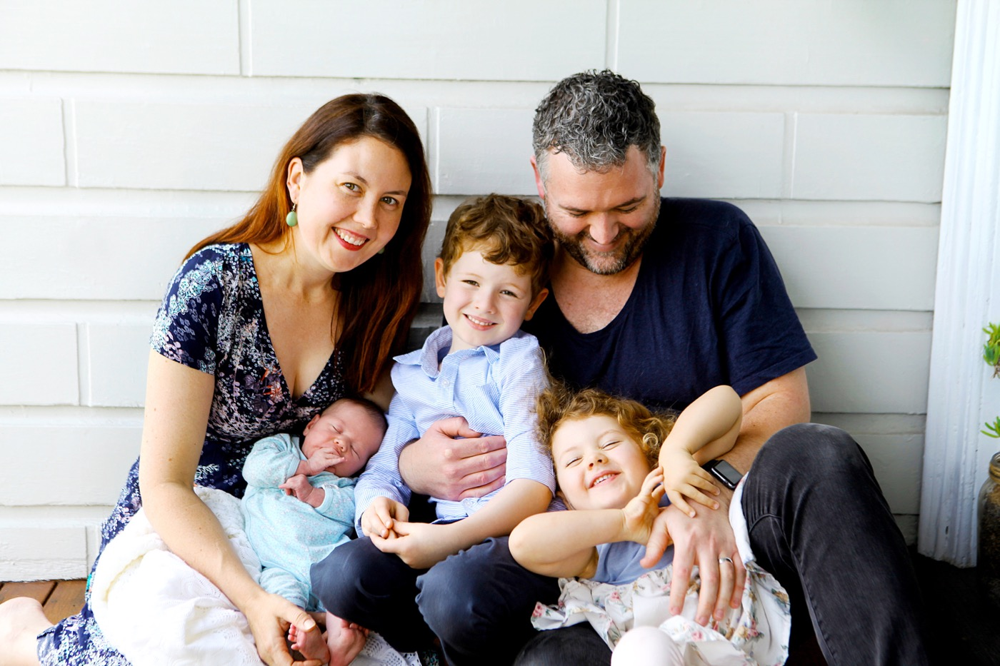

Hi! I’m Tony Arnold, a 43 year old chap from Newcastle, Australia. Professionally, I’m a developer at Itty Bitty Apps where I work on the amazing visual debugging tool, Reveal. I also mess with contribute to as many open source projects as my time allows.
I also have my own (very) small business — The CocoaBots — building apps for Apple devices.
If you’d like to get in contact with me, please feel free to send me an e-mail.
All opinions I express on this site are my own, and do not reflect or represent the opinions of Itty Bitty Apps or any of the projects I’m involved in. If you have a beef about something I’ve said here, your beef is with me.